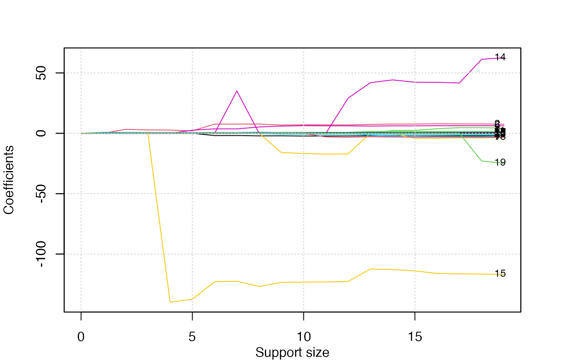

In this tutorial, we are going to demonstrate how to use the abess package to carry out best subset selection on the Hitters dataset. We hope to use several predictors related to the performance of the baseball athletes last year to predict their salary.
Hitters Dataset
First, let’s have a look at this dataset. There are 19 variables except Salary and 322 observations.
## AtBat Hits HmRun Runs RBI Walks Years CAtBat CHits CHmRun CRuns CRBI CWalks
## 1 293 66 1 30 29 14 1 293 66 1 30 29 14
## 2 315 81 7 24 38 39 14 3449 835 69 321 414 375
## 3 479 130 18 66 72 76 3 1624 457 63 224 266 263
## 4 496 141 20 65 78 37 11 5628 1575 225 828 838 354
## 5 321 87 10 39 42 30 2 396 101 12 48 46 33
## 6 594 169 4 74 51 35 11 4408 1133 19 501 336 194
## League Division PutOuts Assists Errors Salary NewLeague
## 1 A E 446 33 20 NA A
## 2 N W 632 43 10 475.0 N
## 3 A W 880 82 14 480.0 A
## 4 N E 200 11 3 500.0 N
## 5 N E 805 40 4 91.5 N
## 6 A W 282 421 25 750.0 A
dim(Hitters)## [1] 322 20## [1] 59Note that this dataset contains some missing data. So we use the na.omit() function to delete rows that have incomplete information. After that, we have 263 observations remains.
## [1] 263 20## [1] 0Then we change the factors into dummy variables with the model.matrix() function. Note that the abess function will automatically include the intercept.
Hitters <- model.matrix(~., Hitters)[, -1]
Hitters <- as.data.frame(Hitters)Best subset selection
The abess() function in the abess package allows you to perform best subset selection in a highly efficient way. You can call the abess() function using formula just like what you do with lm(). Or you can specify the design matrix x and the response y. The system.time function records the run time.
library(abess)
t.seq = system.time(abess_fit <- abess(Salary~., Hitters))[3]
t.seq## elapsed
## 0.01
abess_fit = abess(Hitters[, -which(colnames(Hitters) == "Salary")], Hitters$Salary)
class(abess_fit)## [1] "abess"Interpret the Result
Hold on, we aren’t finished yet. After get the estimator, we can further do more exploring work. The output of abess() function contains the best model for all the candidate support size in the support.size. You can use some generic function to quickly draw some information of those estimators.
# draw the estimated coefficients on all candidate support size
coef(abess_fit)## 20 x 20 sparse Matrix of class "dgCMatrix"## [[ suppressing 20 column names '0', '1', '2' ... ]]##
## (intercept) 535.9259 274.5803864 -47.9559022 -71.4592204 13.9231044
## AtBat . . . . .
## Hits . . 3.3008446 2.8038162 2.6757978
## HmRun . . . . .
## Runs . . . . .
## RBI . . . . .
## Walks . . . . .
## Years . . . . .
## CAtBat . . . . .
## CHits . . . . .
## CHmRun . . . . .
## CRuns . . . . .
## CRBI . 0.7909536 0.6898994 0.6825275 0.6817790
## CWalks . . . . .
## LeagueN . . . . .
## DivisionW . . . . -139.9538855
## PutOuts . . . 0.2735814 0.2735002
## Assists . . . . .
## Errors . . . . .
## NewLeagueN . . . . .
##
## (intercept) -7.6563819 91.5117981 67.9431538 114.5067227 197.6616396
## AtBat . -1.8685892 -1.8535176 -2.1250564 -2.0803280
## Hits 2.0467293 7.6043976 7.6348879 7.6482495 6.8263359
## HmRun . . . . .
## Runs . . . . .
## RBI . . . . .
## Walks 2.5574106 3.6976468 3.6644212 5.2391412 5.9761215
## Years . . . . -15.9414459
## CAtBat . . . . .
## CHits . . . . .
## CHmRun . . . . .
## CRuns . . . . 0.8143029
## CRBI 0.6492007 0.6430169 0.6445474 0.8959228 0.6000624
## CWalks . . . -0.3487728 -0.7503761
## LeagueN . . 35.0926551 . .
## DivisionW -137.3676333 -122.9515338 -122.5437635 -126.8503150 -123.4936780
## PutOuts 0.2518721 0.2643076 0.2584749 0.2655057 0.2702288
## Assists . . . 0.1790809 .
## Errors . . . . .
## NewLeagueN . . . . .
##
## (intercept) 206.5672285 218.5527334 198.4967427 142.9090129 144.6793182
## AtBat -2.2556858 -2.2102483 -2.1783358 -2.0120568 -2.0883279
## Hits 7.0378766 6.9279436 6.9273744 7.3751935 7.6436454
## HmRun . . . . 2.3406524
## Runs . . . -1.7130320 -2.3580478
## RBI . . . . .
## Walks 6.2793246 6.2243570 6.1667822 5.9906173 6.1794713
## Years -16.7414858 -17.2542087 -17.0664017 . .
## CAtBat . . . -0.1527096 -0.1488074
## CHits . . . . .
## CHmRun . . . . .
## CRuns 0.8132079 0.8111144 0.8082476 1.5535444 1.5931621
## CRBI 0.6508515 0.6594949 0.6571221 0.7850103 0.7170767
## CWalks -0.7882990 -0.7934064 -0.7898841 -0.8404419 -0.8565844
## LeagueN . . 29.1474123 41.9165343 44.2352269
## DivisionW -123.2261893 -123.1231837 -122.8009102 -112.3809790 -112.8079905
## PutOuts 0.2824819 0.2883338 0.2830813 0.2896964 0.2876182
## Assists 0.1872292 0.2795390 0.2732454 0.3312276 0.3677311
## Errors . -3.0198567 -3.3107203 -2.8685826 -3.1271251
## NewLeagueN . . . . .
##
## (intercept) 163.3275824 163.0064063 162.9932027 163.1632541 163.1035878
## AtBat -2.1085651 -2.0890552 -2.0302709 -2.0186239 -1.9798729
## Hits 7.6501026 7.8848050 7.7483580 7.7381465 7.5007675
## HmRun 2.3654025 3.8223369 4.6470956 4.6127592 4.3308829
## Runs -2.3535049 -2.5377954 -2.5882384 -2.6272166 -2.3762100
## RBI . -0.8815425 -1.1165187 -1.1190038 -1.0449620
## Walks 6.1730276 6.2941910 6.2778803 6.3108843 6.2312863
## Years -4.2321550 -4.0947594 -3.7490950 -3.8738277 -3.4890543
## CAtBat -0.1341737 -0.1350897 -0.1526121 -0.1514014 -0.1713405
## CHits . . . . 0.1339910
## CHmRun . . -0.3876922 -0.3938397 -0.1728611
## CRuns 1.5426322 1.5321626 1.5730263 1.5708067 1.4543049
## CRBI 0.7144063 0.7420886 0.8965235 0.8961782 0.8077088
## CWalks -0.8446970 -0.8559654 -0.8423839 -0.8467366 -0.8115709
## LeagueN 42.2835360 42.2286763 41.6482699 61.3012822 62.5994230
## DivisionW -113.9853363 -116.0422926 -116.4111439 -116.5862127 -116.8492456
## PutOuts 0.2859836 0.2858651 0.2827595 0.2829156 0.2818925
## Assists 0.3643305 0.3641325 0.3661464 0.3640952 0.3710692
## Errors -3.2379385 -3.1409199 -3.1840695 -3.2558249 -3.3607605
## NewLeagueN . . . -22.9788245 -24.7623251
# get the deviance of the estimated model on all candidate support size
deviance(abess_fit)## [1] 202734.27 137565.32 116526.84 111214.06 106353.05 104483.91 99600.40
## [8] 99303.92 98158.60 94654.62 94081.77 93894.74 93695.85 92354.17
## [15] 92200.23 92154.67 92106.59 92065.27 92032.81 92017.87
# print the fitted model
print(abess_fit)## Call:
## abess.default(x = Hitters[, -which(colnames(Hitters) == "Salary")],
## y = Hitters$Salary)
##
## support.size dev GIC
## 1 0 202734.27 3213.768
## 2 1 137565.32 3116.836
## 3 2 116526.84 3078.241
## 4 3 111214.06 3071.026
## 5 4 106353.05 3064.330
## 6 5 104483.91 3064.725
## 7 6 99600.40 3057.194
## 8 7 99303.92 3061.468
## 9 8 98158.60 3063.475
## 10 9 94654.62 3058.972
## 11 10 94081.77 3062.434
## 12 11 93894.74 3066.968
## 13 12 93695.85 3071.469
## 14 13 92354.17 3072.733
## 15 14 92200.23 3077.352
## 16 15 92154.67 3082.280
## 17 16 92106.59 3087.201
## 18 17 92065.27 3092.141
## 19 18 92032.81 3097.106
## 20 19 92017.87 3097.063Prediction is allowed for all the estimated model. Just call predict.abess() function with the support.size set to the size of model you are interested in. If a support.size is not provided, prediction will be made on the model with best tuning value.
head(predict(abess_fit, newx = Hitters[, -which(colnames(Hitters)=="Salary")],
support.size = c(3, 4)))## 3 4
## 2 611.11976 545.8175
## 3 715.34087 643.8563
## 4 950.55323 1017.2414
## 5 424.10211 498.2470
## 6 708.86493 632.3839
## 7 59.21692 139.8497The plot.abess() function helps to visualize the change of models with the change of support size. There are 5 types of graph you can generate, including coef for the coefficient value, l2norm for the L2-norm of the coefficients, dev for the deviance and tune for the tuning value. Default if coef.
plot(abess_fit, label=T)
The graph shows that, beginning from the most dense model, the 15th variable (Division, A factor with levels E and W indicating player’s division at the end of 1986) is included in the active set until the support size reaches 3.
We can also generate a graph about the tuning value. Remember that we used the default GIC to tune the support size.
plot(abess_fit, type="tune")
The tuning value reaches the lowest point at 6. And We might choose the estimated model with support size equals 6 as our final model. In fact, the tuning values of different model sizes are provided in tune.value of the abess object. You can get the best model size through the following call.
abess_fit$support.size[which.min(abess_fit$tune.value)]## [1] 6To extract any model from the abess object, we can call the extract() function with a given support.size. If support.size is not provided, the model with the best tuning value will be returned. Here we extract the model with support size equals 6.
## List of 7
## $ beta :Formal class 'dgCMatrix' [package "Matrix"] with 6 slots
## .. ..@ i : int [1:6] 0 1 5 11 14 15
## .. ..@ p : int [1:2] 0 6
## .. ..@ Dim : int [1:2] 19 1
## .. ..@ Dimnames:List of 2
## .. .. ..$ : chr [1:19] "AtBat" "Hits" "HmRun" "Runs" ...
## .. .. ..$ : chr "6"
## .. ..@ x : num [1:6] -1.869 7.604 3.698 0.643 -122.952 ...
## .. ..@ factors : list()
## $ intercept : num 91.5
## $ support.size: num 6
## $ support.vars: chr [1:6] "AtBat" "Hits" "Walks" "CRBI" ...
## $ support.beta: num [1:6] -1.869 7.604 3.698 0.643 -122.952 ...
## $ dev : num 99600
## $ tune.value : num 3057The return is a list containing the basic information of the estimated model.